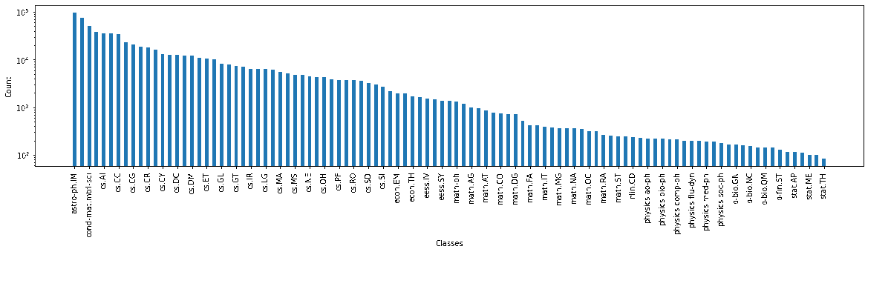
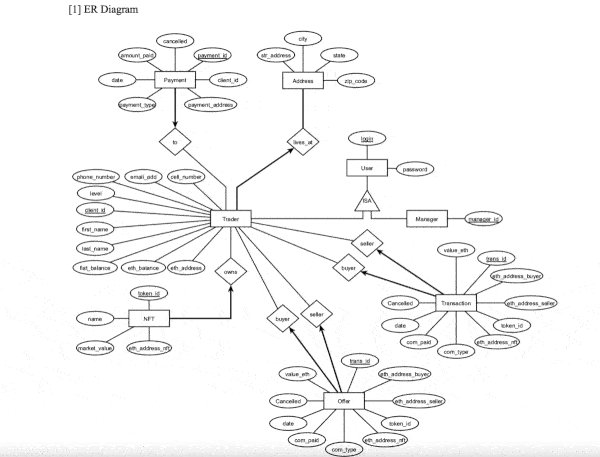

-

Solved a multi-label classification problem to predict relevant categories for arXiv papers. Performed data cleaning, data pre-processing, modelling, hyper-parameter tuning on different parametric and non-parametric ML algorithms. Tech Stack - Python, scikit-learn
Developed an end-to-end voice-controlled mobile application that assists the visually impaired by answering questions about their surroundings using Visual Question Answering from FAIRs MMF and Optical Character Recognition techniques. Tech Stack - Python, Flask, Anvil, Ionic, JUnit, PyTorch

Developed an end-to-end voice-controlled mobile application that assists the visually impaired by answering questions about their surroundings using Visual Question Answering from FAIRs MMF and Optical Character Recognition techniques. Tech Stack - Python, Flask, Anvil, Ionic, JUnit, PyTorch

Built an efficient attendance marking system, that used a special type of CNN architecture, known as Siamese network to mark the attendance of a student using facial recognition. Also implemented a data analysis tool using Python, developed the front-end using PyQt5, and the database management was done using MongoDB. Tech Stack - Python, TensorFlow, PyQT5, MongoDB

Built a shopping cart that uses RFID technology to scan the price of items shopped and generate the final receipt. Tech Stack - Raspberry Pi, RFID & Python

Used the FBProphet model to perform prediction of daily and quarterly revenue of PubMatic, Inc. Using internal data. Tech Stack - Python, Pandas

Used the EfficientNet model to extract metadata from video ads to help their categorization. Tech Stack - Python, TensorFlow, Keras, Hadoop & OpenCV

Implemented a web service app using Flask & HTML to generate titles for images using a VGG-16 model and NLTK. Tech Stack - Python, TensorFlow, Flask, HTML & CSS